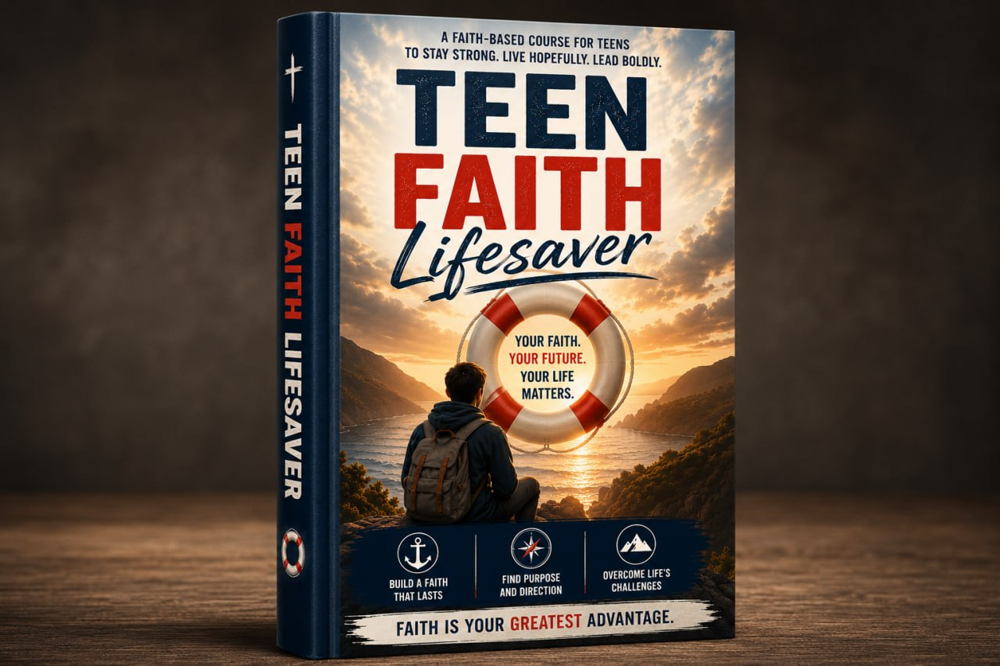

Youth Group Isn't Enough
Most parents outsource faith formation to youth group. By the time your teen is rolling their eyes, the battle is half lost.
Defend Them

A proven system to keep your teen in the Church through their most vulnerable years (ages 13-23)... even when public school, social media, and secular college are pulling them away.

Seventy percent. That's how many Catholic teens leave the Church by age 23. Not "drift away." Not "become less active." They leave. Gone. Statistically, 7 out of 10 kids you see at Mass today won't be there in ten years.
You've seen the warning signs. Maybe your 14-year-old rolls their eyes during family prayer. Maybe your 16-year-old has "questions" that sound more like objections. Maybe they flat-out refuse to go to Mass.
The culture isn't just competing with the Church anymore — it's hunting your children. The parents who win? They started years earlier. They built something most Catholic families don't have: A system.
Most parents outsource faith formation to youth group. By the time your teen is rolling their eyes, the battle is half lost.
Public school, social media, and secular college are pulling your teen away 24/7. You need a system to fight back.
The parents who win start earlier and build something different. This is that system.
From the Retention Mindset to the Crisis Protocol — everything you need to guide your teen through their most vulnerable years.
Get the Complete System — $397Why youth group fails and the 3 conversations you need to have before age 13.
Teaching apologetics without boring them.
Structuring your home so faith is inevitable.
Preparing for the intellectual assault of secular university.
What to do when they push back or walk away.
The complete system for keeping your teen Catholic through their most vulnerable years.
Go through the first two modules. Use the Retention Assessment. Try the conversation scripts. If you don't feel more confident about keeping your teen Catholic, email us within 30 days for a full refund. No questions asked.
Join hundreds of Catholic parents who refuse to lose their teens to the culture.
30-Day Money-Back Guarantee